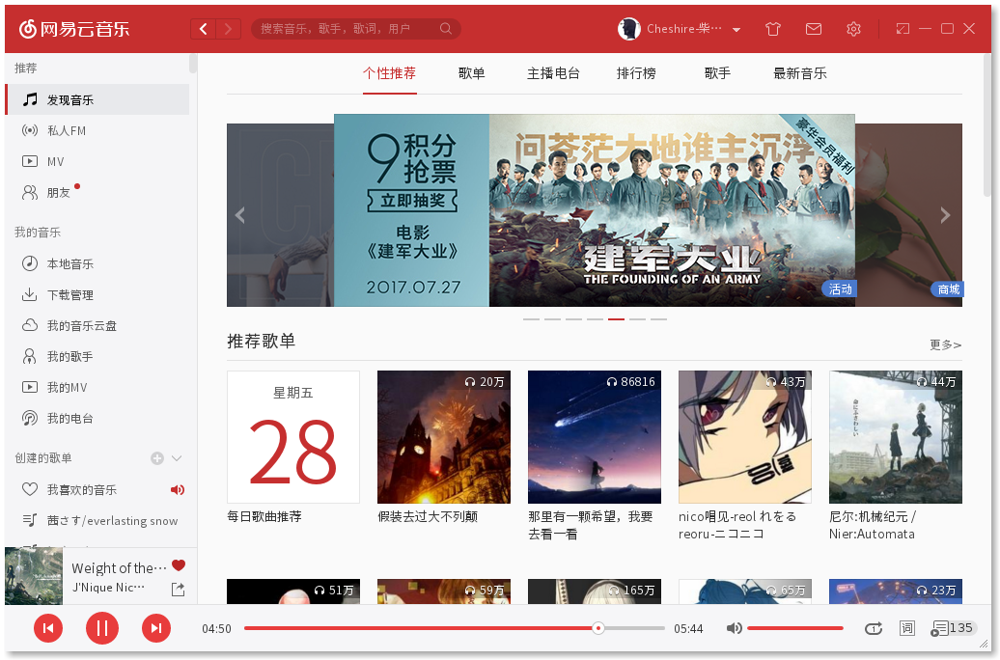
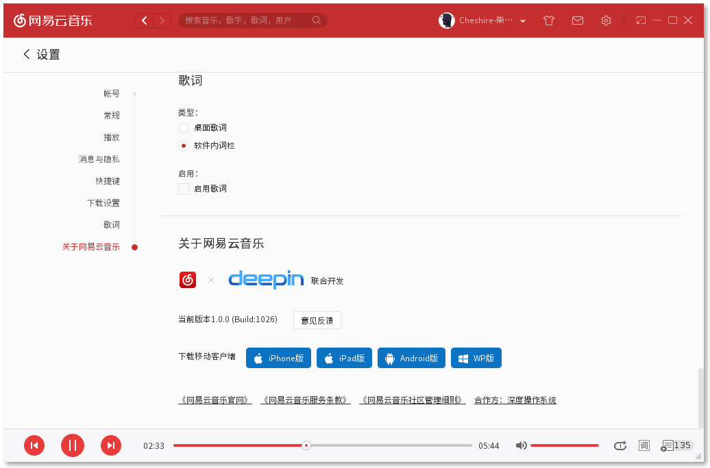

前言
本文介绍如何在CentOS7下安装网易云音乐。
网易云音乐Linux版

网易云音乐以其优秀的用户体验征服了大量用户，半年前，网易云音乐与深度科技团队合作推出了”网易云音乐Linux版”，简直是国产软件中的一股清流。可惜，网易只提供了 debian 系的打包文件 deb，并没有提供 rpm 格式的打包文件。Fedora, Arch社区的小伙伴们有自发打包网易云音乐Linux版。但是，子恒喵用的是CentOS7…只能手动安装了。
安装步骤
子恒喵使用的系统:
- 系统版本号: CentOS-7-x86_64-1611
- 内核版本号: 3.10.0-514.el7.x86_64
Step 1 下载安装包
请前往网易云音乐下载页，下载 ubuntu14.04(64位) 版本。注意请下载这个版本。倒不是说其他版本不能用，只是其他版本对依赖包的处理相当繁琐，有些依赖包找不到，甚至要更动到基础依赖包（GLIBC）。低版本就没有那么多的问题，依赖都可以通过 yum 轻松解决。
请下载低版本 ubuntu14.04（64位）安装包。
Step 2 解压安装包
新建一个文件夹，接下来的操作都在该文件夹中进行。
我们可以使用ar工具提取deb包中的内容。
提取得到3个文件，其中， data.tar.xz 就是网易云音乐Linux版的主体文件压缩包，control.tar.gz 是控制文件压缩包，包含该 deb 包的基本信息，文件MD5校验码等等。
接下来，我们解压出网易云音乐Linux版的主体文件。
解压得到一个/usr目录，进去瞧瞧：
- bin
- lib
- share
标准的 Linux 软件目录结构。
我们来把这些文件放到它们应该去的地方。
Step 3 解决依赖问题
这一步是最繁琐的啦，我们需要手动解决软件依赖性问题。
提取依赖信息
我们先把依赖信息提取出来。还记得control.tar.gz这个文件么，里面就有记录网易云音乐所需依赖信息。
解压出来的control文件中，有我们需要的依赖信息。
引入额外 yum 仓库
在使用yum解决依赖性问题之前，我们需要先额外引入两枚yum仓库：epel与rpmfusion。
这两枚yum仓库中可以找到我们所需要的全部依赖包。
如何引入yum仓库，可以看这篇博文。
使用 yum 解决依赖问题
网易云音乐Linux版使用的图形库是Qt，我们把Qt的依赖包装上。
解决图形库依赖
网易云音乐Linux版使用的解码器是gstreamer。另外还需要gstreamer的3枚插件。
解决解码器依赖
网易云音乐Linux版使用到了chrome-sandbox（云音乐客户端就是在chrome外边套了层壳…），我们还需要1枚依赖包。
解决 chrome 框架依赖
在子恒喵的系统上，安装上述依赖包就已经可以解决依赖性问题了。如果还遇到依赖性问题，你可以查看control文件，将缺失的依赖包补齐。
Step 4 解决 abort 问题
装好依赖包，解决软件依赖性问题之后，我们还有一个小问题要处理。由于网易云音乐Linux使用的是chrome框架，需要chrome沙盒机制chrome-sandbox能正常工作。
启用chrome-sandbox机制，我们需要为chrome-sandbox这个文件设置特殊权限位: suid。
改变文件所属用户为 root，设置权限位为 4755（加入 suid 特殊权限位）。
此时，我们在命令行下执行netease-cloud-music命令，应该就没有问题了。
网易云音乐Linux版正常运行。

Step 5 图形界面快捷方式
至此，我们的安装过程已经完成。接下来的一些工作，都是一些锦上添花的事情啦。
我们不希望每次都从要命令行启动网易云音乐，我们来为它添加图形界面快捷方式。
修改Icon与Exec选项，使其对应到正确的路径。
注意使用绝对路径
Step 6 卸载相关
由于网易云音乐Linux版是我们手动安装的，并不能使用包管理器管理它。我们可以写一支脚本，记录下文件安装路径，方便日后卸载。